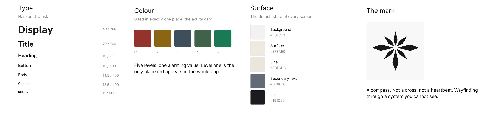
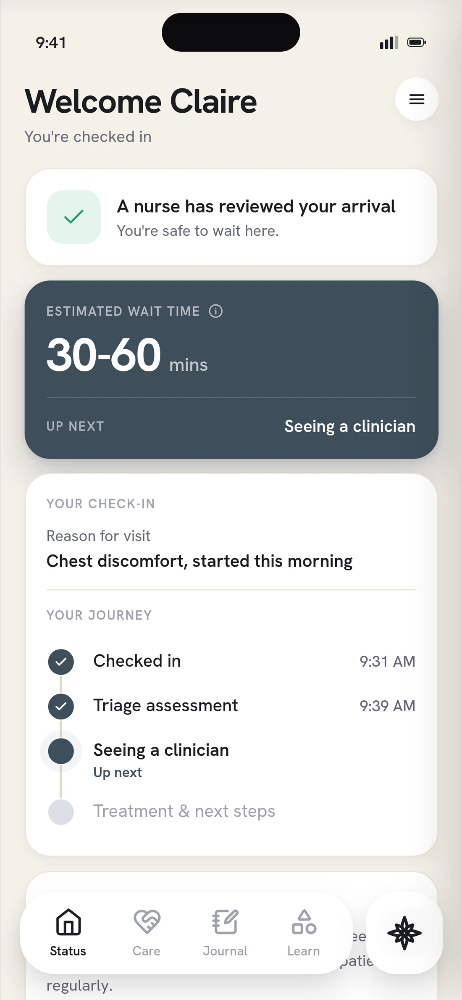
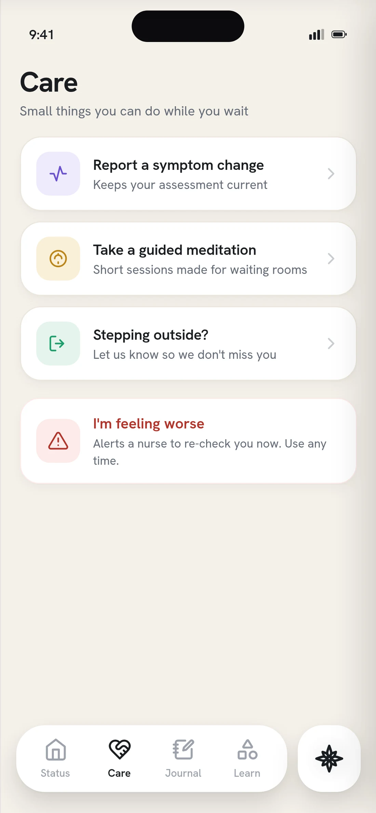
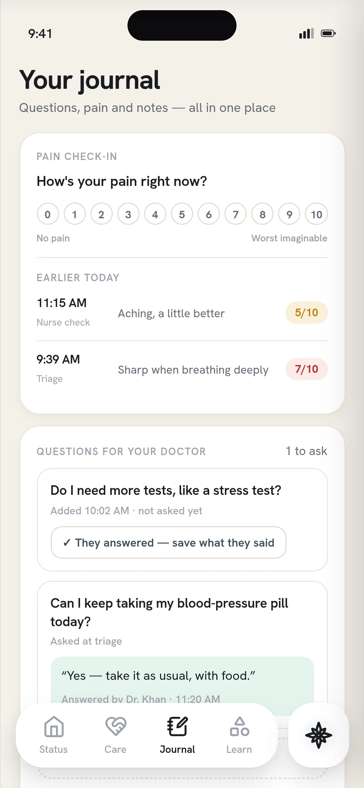
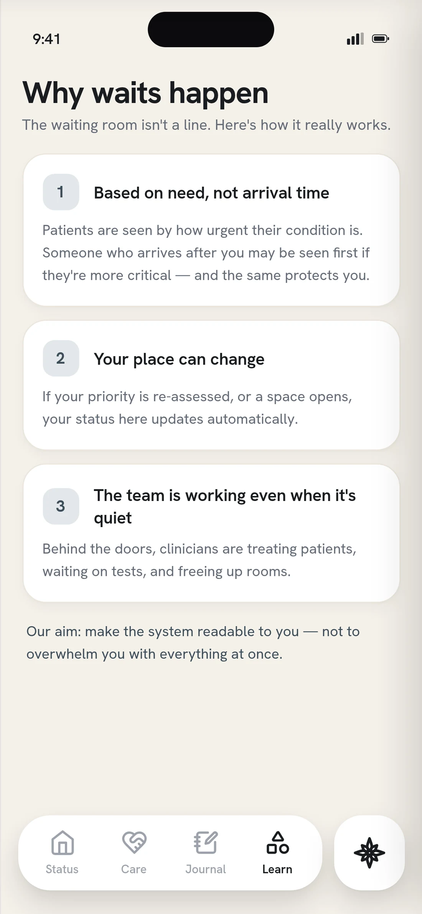
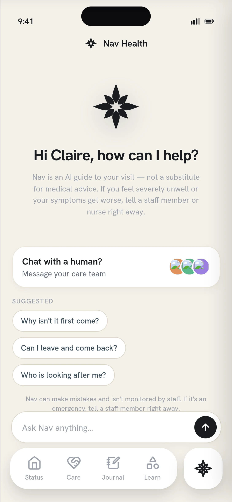
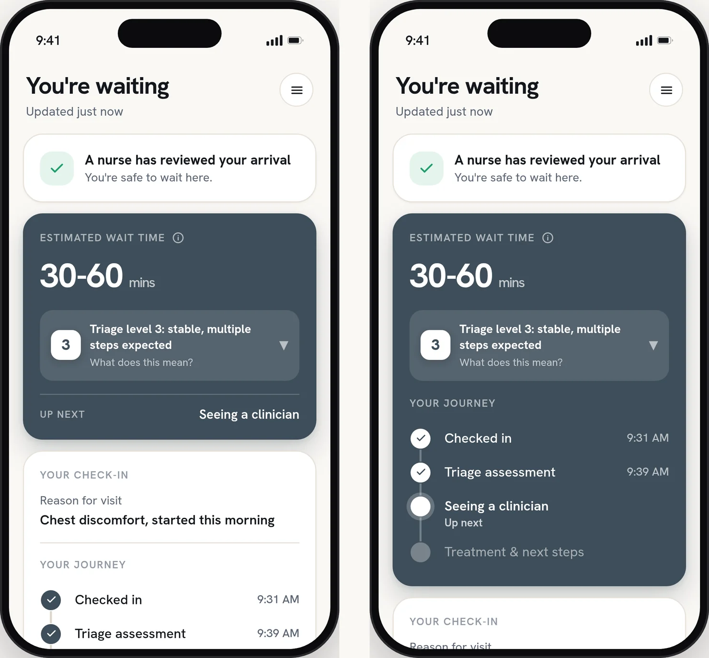
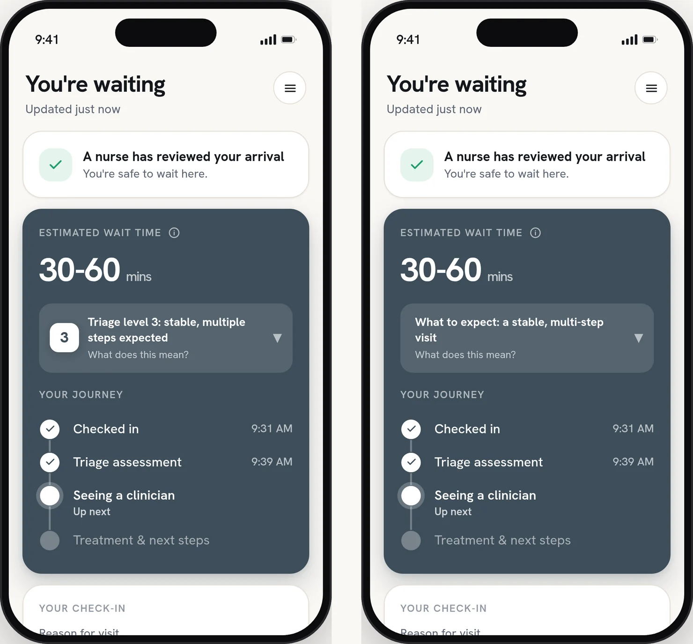
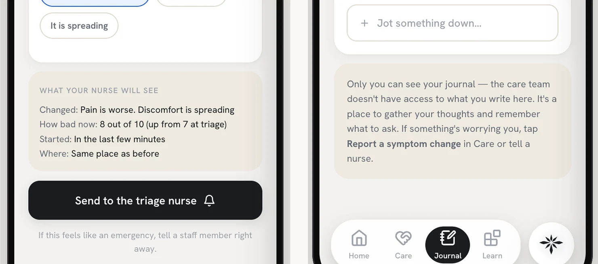

How do you tell someone where they stand, when the answer changes every minute and depends on things they can’t see?
Nav Health is a digital companion for the emergency room.
The goal
A patient can explain where they stand and what comes next, without asking the front desk.
A loved one outside the room can follow the visit without waiting for a call.
The problem with the ER wait is not how long it is. It’s that you can’t see it.
The median wait to see a provider is sixteen minutes, and the mean is thirty-eight. Neither sounds bad. But in 2022, about 24 million ER visits waited an hour or more just to be seen.
The department stays quiet for a good reason: it reorders by acuity, and it can’t promise a time it doesn’t control. But a promise was never the ask. The ask was a position, and the department already knows where each patient stands. It just never says it out loud.
What decides the wait
What if the ER said out loud what it already knows?
Two answers came back unanimous. Nothing else did.
I surveyed sixteen people who had sat through an ER visit, most of them for three hours or more. It’s a small convenience sample, so I read unanimous answers as uncontested, not universal.
They wanted to know what to expect.
Not just the wait, but the wait and why. A number on its own still leaves you sitting in the dark.
Nobody wanted the app instead of a person.
Most would try it, and six of them still wanted a human in the loop.
User journeys
Five journeys, each built to stress a different part of the design.
Scroll or use the arrows
What does a patient need to stand on?
A gauge of the wait
Not a promise, a size.
A connection point
The visit is rarely one person’s alone.
Orientation
Which part of the visit they’re in, and what comes next.
A way to say it’s worse
One that reaches a nurse, not one that sits in the app.
Calm by default. Alarm reserved.
Before designing anything, since I was not designing inside somebody else’s design system, I realized I needed to build the base of one of my own.

Click to see it closer
In a heightened space, calm is the only way an interface still gets read by someone who is frightened. So colour is spent in exactly one place, and red belongs to a level the patient never reads.





Version one, running end to end
Click any to see it closer
Turn what the department already knows into something a patient can hold.
Sound on
A range, timestamped and kept up, not a countdown. A countdown reads as a promise, and the ER reorders by acuity, not arrival.
The level never arrives alone: what it means, what it doesn’t, and that you can be reassessed. Levels three to five describe how many resources the visit needs, so a three isn’t a middling score. Steps, not score.
Some people want every detail. Others want as little as possible. So the surface layer stands on its own, and the wait follows you to the lock screen, so you can put the phone down without losing your place.
The number was inert. The three lines around it did the work.

Left, the layout I had. Right, the alternative I tested it against.
Click to see it closer
Two cards. The wait estimate in one, the journey below it in another.
One card. Four of seven preferred the journey inside the wait card, and nobody chose the split. Comprehension was the same in both, so one isn’t clearer. It costs less to read. Three of the four saw it second, so recency can’t be ruled out at seven.

The only difference is the number.
The same panel with the numeral and without it.
Across five people, comprehension and trust didn’t move. The number is inert. I kept it anyway, because it’s the word staff use out loud. The three lines around it do the work.

What the nurse will see, and what nobody will
Three patient testers, then a practicing ER nurse.
Patients needed sync to run in both directions. The nurse caught something no patient could: never show a nurse or tech’s last name. There is one family with that surname in the county. It changed two screens.
Working prototype
Open the triage panel, change the level, and watch the same three lines hold at every one.
Human-led, with the machine at the ideation stage.
A visit has states, and a still frame only has one. So I built the prototype in code and tested the states, not the screens.
- What the machine did
- Ideation and early variation, and scaffolding for the coded prototype so I could test states rather than screens. Nothing generated survives as a design decision.
- What I did
- The research, the framing, the system, every screen, both A/B instruments, and the last craft pass: type, copy, spacing, the second click.
Scale · Human–Machine Collaboration, Dubai Future Foundation
Concept work, with a bar I’d hold it to.
Nav Health was never run in a live department. If it were, I’d watch three things:
Comprehension
Can waiting patients explain their level and what comes next?
Front desk questions
Do “How much longer?” and “Where am I in line?” drop?
Walkouts don’t rise
Honest wait info shouldn’t push people out the door.
And I’d change the container. Nobody downloads an app in a waiting room, so the right form is probably an emergency mode inside the system the hospital already runs, opened from a text they already send.
Designing for the bad days.
Only one idea survived: honest communication.
Early on, I spent a lot of time on agency, and how patients might use their phone to feel some. Every idea but one fell short of the standard I set for this app. That one was honest communication.
The last best experience is the new expectation.
Bridget van Kralingen at IBM put it this way: the last best experience anyone has anywhere becomes the minimum expectation for the experience they want everywhere. People’s standards for information, and for being in the loop, have grown. The ER is held to the same bar. This is someone’s worst day, which makes it worth the time to make it a little better.